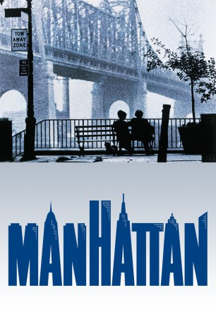

#6323 Manhattan
Auszeichnungen: für 2 Oscars nominiert 2 BAFTA-Awards gewonnen
 
 IMDB-Wertung: 8.0 / 10
IMDB-Wertung: 8.0 / 10  Tomatometer: 95
Tomatometer: 95  Metascore: 0
Metascore: 0 
Der 42-jährige Isaac Davis hat einen Job, den er hasst, eine Freundin, die er als zu jung empfindet und eine lesbische Ex-Frau namens Jill, die gerade ein Enthüllungsbuch über ihre Ehe schreibt ��� und die er am liebsten erwürgen würde. Dann aber verliebt er sich Hals über Kopf in Mary, die attraktive, intellektuelle neue Flamme seines besten Freundes. Isaac verlässt die blutjunge Tracy, wirbt um Mary, wirft seinen Job hin und beginnt seine Suche nach Romantik und Erfüllung in einer Stadt, in der Sex so intim ist wie ein Handschlag – und der Weg zur wahren Liebe durch eine Drehtür führt.
Jahr: 1979
Dauer: 96 Minuten
FSK: 12
Land: USA Studio: United ArtistsTonspuren:
Untertitel: Deutsch,
Auflösung: 1080p (1920x824) Größe: 7823 MB
Genre: Drama, Komödie, Liebe
Regisseur:  Woody Allen
Woody Allen
Drehbuch: Sebastian Schipper
Soundtrack:
Darsteller:
 Woody Allen als Isaac
Woody Allen als Isaac Diane Keaton als Mary
Diane Keaton als Mary Michael Murphy als Yale
Michael Murphy als Yale- Mariel Hemingway als Tracy
 Meryl Streep als Jill
Meryl Streep als Jill- Anne Byrne Hoffman als Emily
- Karen Ludwig als Connie
- Michael O'Donoghue als Dennis
- Tisa Farrow als Party Guest
 Karen Allen als Television Actor #2
Karen Allen als Television Actor #2 David Rasche als Television Actor #3
David Rasche als Television Actor #3 Wallace Shawn als Jeremiah
Wallace Shawn als Jeremiah- Mark Linn-Baker als Shakespearean Actor
 Frances Conroy als Shakespearean Actress
Frances Conroy als Shakespearean Actress Tobin Bell als Man on Street , uncredited
Tobin Bell als Man on Street , uncredited- Victor Truro als Party Guest
 Helen Hanft als Party Guest
Helen Hanft als Party Guest- Bella Abzug als Guest of Honor
- Gary Weis als Television Director
- Kenny Vance als Television Producer
- Charles Levin als Television Actor #1
- Damion Scheller als Isaac's Son
- Bill Anthony als Porsche Owner #1
- John Doumanian als Porsche Owner #2
- Raymond Serra als Pizzeria Waiter
- Llewellyn Lafford als Broadway Pedestrian , uncredited
Datei: X:\1979\Manhattan (1979, FSK12, 1920x824).mkv seit 08.06.2017
Festplatte: HD 1971-1979
 Es gibt insgesamt 29 Filme in der Gruppe '1979'
Es gibt insgesamt 29 Filme in der Gruppe '1979'